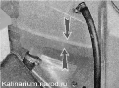
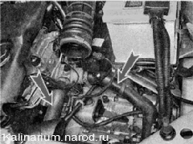

Проверка технического состояния системы охлажденияПри эксплуатации автомобиля оценивать состояние системы охлаждения можно по указателю температуры охлаждающей жидкости и уровню жидкости в расширительном бачке. Понижение уровня охлаждающей жидкости, как правило, вызвано нарушением герметичности системы. На часть автомобилей установлен датчик уровня охлаждающей жидкости. При понижении уровня до отметки MIN загорается соответствующая контрольная лампа в блоке индикации бортовой системы контроля. Последовательность выполнения 1. Подготавливаем автомобиль к выполнению работы Уровень охлаждающей жидкости следует проверять на холодном двигателе. Некоторое повышение или понижение уровня охлаждающей жидкости при нагреве и охлаждении двигателя неисправностью не является. Это связано с тепловым изменением объема жидкости. 2. Проверяем уровень охлаждающей жидкости в расширительном бачке, который должен находиться на 25 — 30 мм выше метки M1N, выполненной на корпусе расширительного бачка. Если уровень жидкости находится на отметке MIN или ниже, доливаем в бачок охлаждающую жидкость. Если приходится регулярно доливать охлаждающую жидкость, следует проверить герметичность системы охлаждения. 3. Проверяем отсутствие подтеканий жидкости из сливных отверстий радиатора и блока цилиндров двигателя, мест установки датчиков температуры, соединений резиновых шлангов системы охлаждения и их целостность. Подтекание охлаждающей жидкости из-под шлангов можно попытаться устранить подтягиванием хомутов крепления шлангов. При этом не перетяните хомуты, т. к. они могут порезать шланги. 4. Проверяем целостность корпуса расширительного бачка, радиатора двигателя и отопителя. 5. Убеждаемся в герметичности корпуса термостата и соединения насоса охлаждающей жидкости и блока цилиндров. 6. Проверяем отсутствие подтекания жидкости из дренажного отверстия насоса (находится в нижней части насоса), свидетельствующее об износе его сальника. 7. Для проверки термостата запускаем холодный двигатель. Температуру охлаждающей жидкости контролируем по указателю на щитке приборов, а циркуляцию жидкости по малому и большому кругу — на ощупь, по изменению температуры шлангов и патрубков системы охлаждения (на фото воздушный фильтр снят для наглядности). Замечание Если система охлаждения двигателя исправна, то при температуре охлаждающей жидкости меньше 90 "С, основной клапан термостата должен быть закрыт, а охлаждающая жидкость циркулировать по малому кругу В результате этого нижний шланг радиатора и сам радиатор будет заметно холоднее корпуса термостата, по которому циркулирует горячая охлаждающая жидкость. При достижении температуры охлаждающей жидкости около 90 "С основной клапан термостата будет открываться и постепенно нарастающий поток горячей жидкости начнет поступать в радиатор. При этом сначала радиатор, а затем его нижний шланг начнут нагреваться. При достижении температуры 102 "С основной клапан термостата полностью откроется и весь поток жидкости будет циркулировать через радиатор. В этом случае радиатор станет горячим в верхней зоне и немного холоднее в нижней. 8. Оставляем двигатель работать до срабатывания электровентилятора радиатора двигателя. При повышении температуры охлаждающей жидкости до значения, когда стрелка указателя температуры подойдет к Гранине красной зоны, электровентилятор должен включиться, а после понижения температуры — автоматически выключиться. Рекомендация Если электровентилятор вовремя не включился, жидкость закипела, необходимо проверить исправность электродвигателя вентилятора или исправность системы управления двигателем. Проверка датчика указателя температуры охлаждающей жидкости показана в разделе «Датчик указателя температуры охлаждающей жидкости - проверка и замена» . |